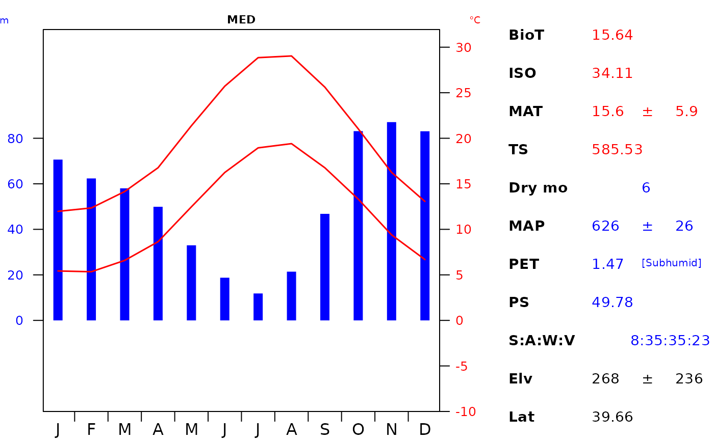

Creates a graph using the climate and elevation data which has
been extracted for a given location. It accepts the data formatted
from the ce_extract function.
plot_c(
data,
geo_id,
interval_prec = 20,
interval_temp = 5,
stretch_temp = 4,
p_cex = 1,
nchr_main = 32,
l_main = 0.1,
l_prec = 0,
l_month = -0.6,
lwd_temp = 1.5,
lwd_prec = 9,
l_units = 0.1,
l_tcols = c(14.5, 16.5, 18.5, 19.5, 22.5)
)List. Containing climate, elevation and latitude
data sets. Structured by ce_extract().
Character. Corresponding to a specific feature contained in the
"location" argument (specifically in the "location_g" column).
Numeric. Interval of the precipitation axis.
Numeric. Interval of the temperature axis.
Numeric. Ratio for stretching temperature relative to precipitation.
Numeric. Text size for entire plot.
Numeric. Controls the number of characters of the main title before wrapping to a new line.
Numeric. Line position of the main title.
Numeric. Line position of the y axis (precipitation).
Numeric. Line position of the x axis (months).
Numeric. Line width of temperature.
Numeric. Line width of precipitation.
Numeric. Line position of precipitation and temperature units.
List. Line position of the table columns. Must be length 5 corresponding to the position (left to right) for each column.
Returns a base R family of plot. This function uses the dismo package to calculate isothermality (ISO), temperature seasonality (TS) and precipitation seasonality (PS).
Pizarro, M, Hernangómez, D. & Fernández-Avilés G. (2023). climaemet: Climate AEMET Tools. Comprehensive R Archive Network. doi:10.5281/zenodo.5205573
Walter, H.B., & Lieth, H. (1960). Klimadiagramm-Weltatlas. VEB Gustav Fischer Verlag, Jena.
Download climate data: ce_download()
# Step 1. Import the Italian Biome polygon data
# Step 2. Run the download function
# Step 3. Run the extract function
#* See ce_download & ce_extract documentation
# Steps 1, 2 & 3 can be skipped by loading the extracted data (it_data)
data("it_data", package = "climenv")
# Step 4. Visualise the climatic envelope using our custom diagram
# first lets store the default graphics parameters
# we need to make some changes to ensure that the table fits in the plotting
# region.
# Set up plotting parameters
oldpar <- par(mar = c(1.5, 2.2, 1.5, 14) + 0.01)
plot_c(
it_data, geo_id = "MED",
l_tcols = c(14.5, 17, 18.5, 19.5, 21)
)

# Restore user options
par(oldpar)
# This output works if you export to a three column width sized image.